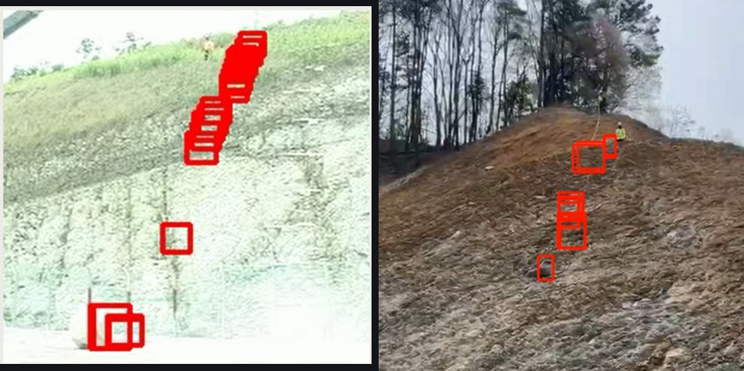
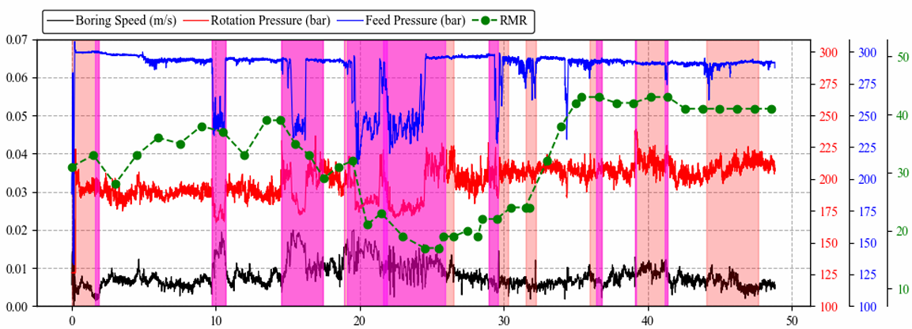
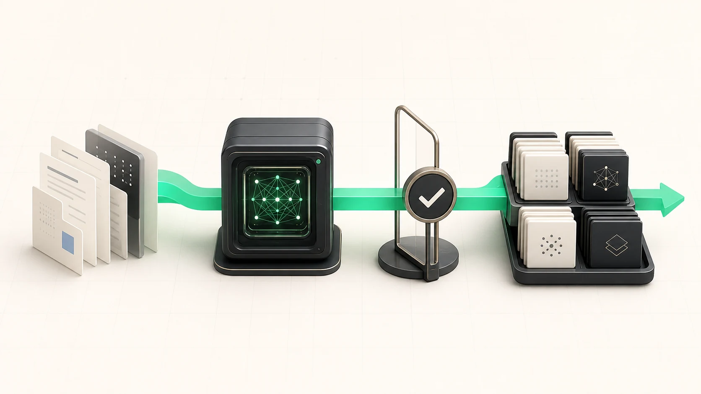
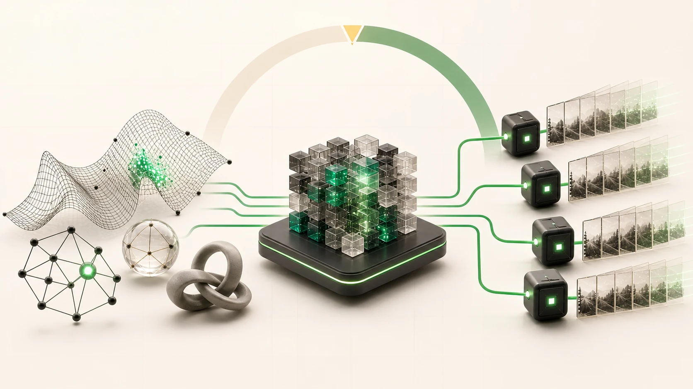
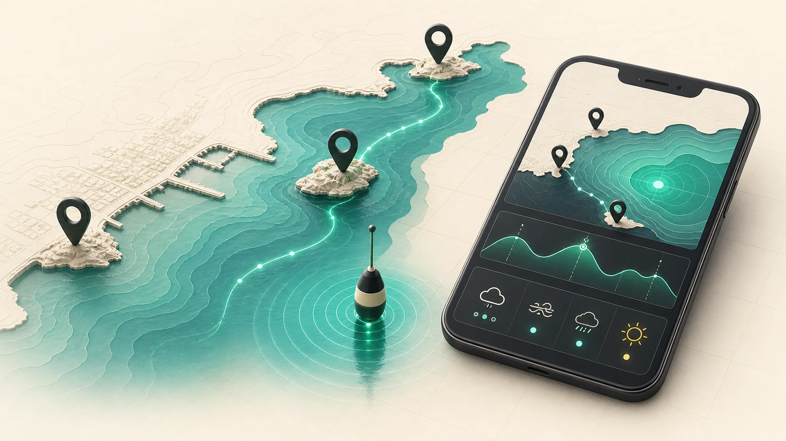
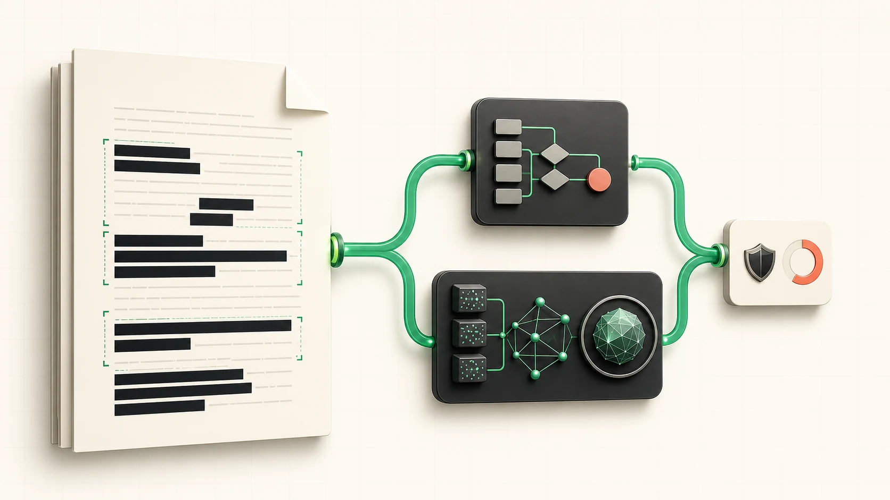
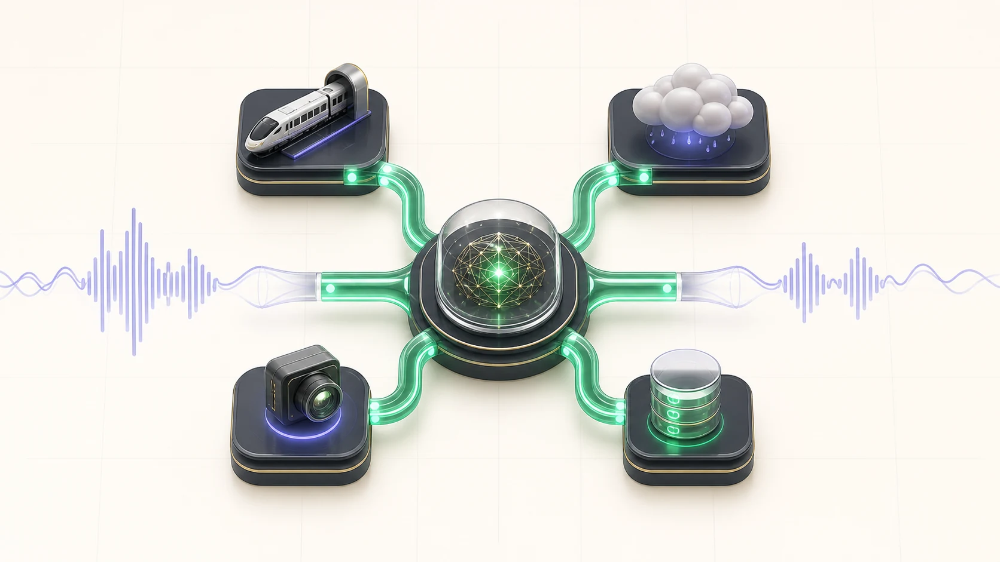

AX 기획
사용자 문제를 입력·판정·검증·운영 단계로 구조화합니다. CheckMate에서는 PM 겸 백엔드 담당으로 분석 흐름과 역할 경계를 정리했습니다.
Core Skills
사용자 문제를 입력·판정·검증·운영 단계로 구조화합니다. CheckMate에서는 PM 겸 백엔드 담당으로 분석 흐름과 역할 경계를 정리했습니다.
YOLO·모션 결합, IF·LOF·OCSVM 비교, Azure RAG, 음성 도구·메모리 모듈처럼 문제에 맞는 AI 구조를 직접 구현합니다.
Azure OpenAI·AI Search·Document Intelligence 연동과 GitHub Actions 워크플로우를 구현했습니다. AWS는 아키텍처·Bedrock 교육 범위에서 확장 중입니다.
Experience
암반 사면과 터널 시공 현장의 위험 구간을 데이터로 탐지하는 연구를 수행했습니다.
YOLOv8 객체 탐지와 프레임 차분 기반 움직임 검출을 결합해 낙석 후보를 필터링하는 연구 프로토타입을 구현했습니다.

현장 영상용 데이터셋 구성과 YOLOv8 학습 실험, 영상 추론, OpenCV 움직임 검출 결합, 결과 확인용 GUI까지 연구 프로토타입 전 과정을 구현했습니다.
작고 빠른 낙석, 조명 변화, 배경 흔들림이 오탐을 만들었습니다. YOLOv8 후보 영역과 프레임 차분 움직임 영역이 겹치는 경우만 최종 후보로 남겼습니다.
영상 프레임을 순차 처리하면서 YOLOv8로 암석 후보 박스를 만들고, OpenCV 기반 MotionDetector로 움직임 박스를 계산했습니다. 두 박스가 IoU/IoM 기준을 만족하는 경우만 최종 낙석 후보로 남기고, GUI에서 confidence, iou threshold, 타일 크기, step, 표시 방식(box/dot/none)을 조정할 수 있도록 구성했습니다.
video_gui.py → process_video()
SOURCEsrc/video_gui.pysrc/motion_detector.pysrc/yolov8_motion_detection.py
GUI에서 받은 조건으로 프레임을 순회합니다. YOLO 후보와 프레임 차분 기반 움직임 후보가 겹칠 때만 낙석으로 남기고, 선택한 표시 방식으로 결과 영상을 저장합니다.
YOLOv8로 학습과 추론 실험을 반복했습니다. 프레임 차분을 결합해 복잡한 추적 모델 없이 정적 오탐을 걸러냈습니다. 카메라 흔들림에는 취약했습니다.
TRADE-OFFS · 대안별 장단점객체 추적은 프레임 간 이동을 이어 볼 수 있지만 추적 실패와 추가 튜닝을 관리해야 합니다. Optical Flow는 세밀한 움직임을 볼 수 있지만 카메라 흔들림과 연산량에 민감합니다.
REVISIT · 현재의 선택현재 보완 우선순위는 카메라 흔들림 보정입니다. 프레임 차분을 기준선으로 두고 경량 추적 모델과 같은 조건에서 비교할 수 있습니다.
이미지 크기, batch size, learning rate 조합을 바꿔 학습했습니다. Recall 중심 설정은 작은 낙석 누락을 줄였습니다. Precision 중심 설정은 오탐을 줄였습니다.
구현 기록: YOLOv8·MotionDetector 코드, IoU/IoM fusion, GUI 기반 영상 처리 흐름.
터널 시공 현장의 MWD 신호와 RMR 변화 데이터를 연결해 지반 위험 구간을 추정하고 비지도 이상 탐지 모델을 비교했습니다.

깊이 기준 데이터 정렬과 feature 구성부터 IF·LOF·OCSVM 실험, 이상 구간 후처리, GUI, 지표 계산과 결과 시각화까지 분석 흐름을 구현했습니다.
터널 굴진 중 장비에서 수집되는 boring speed, rotation pressure, feed pressure 등의 MWD 신호가 지반 상태 변화를 간접적으로 반영한다는 점에서 출발했습니다. 원본 현장 데이터를 깊이 기준으로 정렬하고, RMR 값이 저하되는 구간을 위험 구간을 가늠하는 대체 기준으로 삼았습니다.
experiment_gui.py → run_experiment()
SOURCEsrc/isolation_forest/experiment_gui.pysrc/lof/experiment_gui.pysrc/one_class_svm/experiment_gui.py
세 실험기는 같은 입력·구간화·평가 구조를 공유합니다. 특징 조합과 모델별 하이퍼파라미터를 병렬 실행하고, 예측 구간을 RMR 감소 구간과 0.5m 단위로 비교합니다.
현장 전문가가 위험 구간으로 판정한 데이터가 충분하지 않아 비지도 이상 탐지를 선택했습니다. Isolation Forest는 전역 고립값, LOF는 국소 밀도, One-Class SVM은 정상 영역의 경계를 봅니다. 서로 다른 세 가정을 같은 데이터에서 검증했습니다.
전역적으로 고립된 값을 찾고 contamination 변화에 따른 탐지 구간을 확인했습니다.
주변 밀도와 다른 국소 이상을 찾고 n_neighbors 변화의 영향을 비교했습니다.
정상 영역의 경계를 학습하며 gamma와 nu 조합에 따른 결과를 확인했습니다.
TRADE-OFFS · 대안별 장단점지도학습은 위험 구간 판정 데이터가 필요해 현재 데이터로는 비교하기 어려웠습니다. 비지도 모델은 이 제약을 피하지만 결과 해석에 대체 기준을 사용해야 했습니다.
REVISIT · 현재의 선택위험 구간 판정 데이터를 확보한다면 지도학습 모델과 Autoencoder를 같은 depth-bin 평가에 추가하겠습니다.
예측 위험 구간과 RMR 저하 구간을 0.5m depth-bin 단위로 비교해 Precision, Recall, F1 Score, Accuracy를 산출했습니다. RMR 저하 구간은 실제 위험 판정이 아닌 대체 기준입니다. 평가는 feature와 모델 간 상대 비교로 제한했습니다.
구현 기록: IF/LOF/OCSVM 실험 GUI, depth-bin 평가, 결과 CSV와 시각화 그래프.
Personal Project

AI 기술 동향을 검토 가능한 초안과 재사용할 Skills·설계 기록으로 전환하는 개인 R&D 파이프라인입니다.
개인 프로젝트로 데이터 수집 스크립트, GitHub Actions, 로컬 LLM 워크플로우, 감사·승인 게이트와 Skills·Diaries 저장 구조를 처음부터 끝까지 설계하고 구현했습니다.
LLM 생성물은 staging에 보관합니다. 정적 감사, provenance 검증, 다운그레이드 방지 검사, 사람의 승인을 통과한 결과만 지식 자산으로 승격합니다.
cloud collection → local judgment
SOURCEai-daily-pipeline.ymlfetch_ai_trends.pysign_drafts.pyauto_commit.py
GitHub Actions는 외부 자료를 큐까지만 옮깁니다. 로컬 워크플로가 분석·초안 생성을 맡고, 정적 감사와 provenance 검증 뒤 사람이 승인해야 지식 자산과 AGENTS.md에 반영됩니다.
GitHub Actions로 별도 서버 없이 수집 이력을 남겼습니다. 수집된 자료는 로컬 LLM으로 분석하고, 제가 확인한 결과만 지식 자산으로 반영합니다. 지금은 필요할 때 수동으로 실행합니다.
TRADE-OFFS · 대안별 장단점cron 서버는 단순하지만 운영 상태를 직접 관리해야 합니다. Airflow는 재시도와 의존성 관리가 강하지만 개인 규모에서는 구성과 운영 부담이 큽니다. 클라우드 LLM API는 원격 실행이 쉽지만 호출 비용과 승인 경계를 따로 관리해야 합니다.
REVISIT · 현재의 선택수집량과 작업 단계가 늘어날 경우 큐 기반 실행과 작업별 재시도가 다음 보완 대상입니다. 사람의 승인과 provenance 검사는 운영 경계로 남습니다.
구현 기록: .github/workflows, scripts/sign_drafts.py, scripts/audit_index.py, .agents/workflows.

KRAFTON AI R&D Hackathon 본선 진출 경험을 문제별 풀이와 회고로 정리한 개인 아카이브입니다.
혼자 참가해 제한 시간 안에 문제 구조를 파악하고 풀이와 코드를 완성했습니다. 공개 레포에는 대회에서 낸 코드, 대회 직후 다시 실행한 코드, 다음에 바꿀 점을 따로 기록했습니다.
대회 직후 VideoAgent를 Vertex AI 기반으로 다시 구성했습니다. 재시도, 중간 결과 저장, 파일 정리를 추가했습니다. 반복 실행 시간은 약 190~666초였습니다. 강제 타임아웃, 실패 태스크 취소, 정답 평가셋은 아직 완성하지 못했습니다.
main.py → agent_pipeline.py
2^attempt / 4^attempt backoffSOURCEpost-contest-before-review/main.pyagent_pipeline.pyvideo_processor.py
바깥에서는 20개 영상 문제를 최대 5개씩 처리합니다. 각 영상 안에서는 5분 청크를 최대 3개씩 분석하고, 시간순 로그를 Pro 모델이 추론·자기검토해 한 글자 정답으로 줄입니다. 결과는 작업이 끝날 때마다 잠금 후 저장합니다.
긴 영상을 한 번에 맡기면 시간 초과나 전체 실패 위험이 컸습니다. 5분 구간을 병렬 분석하고 청크 호출 안에서 재시도했습니다. 각 영상의 답은 즉시 저장해 다음 작업이 실패해도 이미 끝난 결과를 보존했습니다.
TRADE-OFFS · 대안별 장단점단일 호출은 구현이 단순하고 전체 맥락을 유지하기 쉽습니다. 분할 처리는 재시도와 부분 저장에 유리하지만 구간 결과를 합칠 때 맥락이 빠질 수 있습니다.
REVISIT · 현재의 선택현재 보완 우선순위는 작업별 강제 시간 제한, 실패 작업 취소, 구간 중복 처리, 정답 평가셋입니다.
구현 기록: 문제별 README, VideoAgent FFmpeg 처리 코드, BattlePredict correct_solve.py, SparseTap GF(2) 풀이.
Team Experience

Busan Ralphton Host Voting Award 수상작입니다. 대회 후 실제 부산 낚시 정보 서비스로 발전시켜 운영하고 있습니다.
/app 모바일 화면의 정보 위계와 낚시 준비·기록·어보·도감·공유 흐름을 다시 설계했습니다. 브랜드 비주얼과 프론트엔드도 맡았습니다. LLM 호출, 결제, DB 스키마, 서버 API는 팀원이 담당했습니다.
한 화면에 정보가 과밀한 모바일 UX는 핵심 정보 우선 배치와 접힘·팝업 구조로 정리했습니다. 동시에 미사용 에셋을 제거하고 대표 이미지를 WebP로 변환해 초기 로딩 부담을 줄였습니다.
public/assets를 13.3MB에서 5.78MB로 줄이고, 대표 샘플 이미지는 909.7KB에서 30.2KB로 줄였습니다. Host Voting Award 수상 후에도 작업을 이어가 현재 라이브 서비스로 운영하고 있습니다.
Vite·React로 모바일 화면을 구현하고 zustand로 상태를 관리했습니다. 지도는 Leaflet을 사용해 별도 과금 없이 낚시 포인트를 표시했습니다.
TRADE-OFFS · 대안별 장단점Next.js는 서버 렌더링과 검색 노출이 필요할 때 유리하지만 현재 앱 흐름에는 추가 구성이 생깁니다. Redux는 큰 상태 구조에 강하지만 이 프로젝트에는 관리 코드가 늘어납니다. 상용 지도는 국내 장소 데이터가 풍부하지만 비용과 공급자 의존성을 함께 관리해야 합니다.
REVISIT · 현재의 선택검색 유입이 중요해질 경우 서버 렌더링이 다음 검토 대상입니다. 낚시 포인트 정확도가 우선일 경우 국내 지도 API와 Leaflet을 같은 조건에서 비교할 수 있습니다.
라이브 서비스, Host Voting Award, 에셋 최적화 커밋으로 작업 결과를 확인할 수 있습니다.

Azure OpenAI와 AI Search 기반 RAG로 계약서를 검토하는 시스템입니다. 명시 조건은 Rule Engine으로 판정하고, 독소조항 후보와 실패 규칙의 설명에는 법령·판례 검색과 LLM을 연결했습니다.
PM과 백엔드를 맡아 문서 분석 흐름과 역할을 정리했습니다. Azure Language PII 결과를 OCR 좌표와 연결해 개인정보를 가렸습니다. 임대차·근로계약 법률 데이터를 Azure AI Search에 적재하고 검색 흐름도 구현했습니다.
PipelineRunner.execute(steps)
SOURCEanalysis.pypipeline.pypii.pyrag.pyrule_engine.py
FastAPI의 PipelineRunner가 임대차·근로 분석 단계를 순서대로 실행합니다. OCR과 스키마 정규화 뒤 규칙 판정과 독소조항 검증을 수행하고, PII를 원문 좌표에 다시 연결합니다. 실패 규칙의 근거를 검색해 설명한 뒤 마스킹 PDF와 다국어 결과를 생성합니다.
개인정보를 원문 위치에서 가리려면 텍스트와 좌표가 모두 필요해 Azure Document Intelligence를 선택했습니다. 명시 조건은 Rule Engine으로 재현 가능하게 판정하고, 독소조항 후보 검증과 실패 규칙 설명에는 RAG와 LLM을 사용했습니다. 비용 효과는 수치로 확인하지 못했습니다.
TRADE-OFFS · 대안별 장단점LLM 단독 구조는 구현 흐름이 단순하지만 같은 조항의 판정이 달라질 수 있고 모든 요청에 모델 호출이 필요합니다. Rule Engine은 결과가 일정하지만 법률 규칙을 계속 관리해야 합니다. 텍스트만 추출하는 OCR은 원문 마스킹에 필요한 좌표가 부족합니다.
REVISIT · 현재의 선택현재 보완 우선순위는 법률 전문가가 판정한 평가셋, 검색 품질 지표, 규칙과 LLM의 불일치 기록, 요청별 비용 측정입니다.
임대차·근로계약 규칙 검증, RAG 근거 검색, PII 마스킹, 8개 언어 리포트를 하나의 프로토타입으로 연결했습니다. 실제 서비스로 발전시키려면 법률 전문가가 검증한 데이터셋이 더 필요합니다.
구현 기록: backend/app/api/endpoints/analysis.py, rule_engine.py, labor_rules.py, rag.py, README.

음성 입력, 도구 호출, 벡터 메모리 PoC를 분리 구현하고 팀의 실시간 음성 컴패니언 백엔드에 통합한 프로젝트입니다.
3rd_Project_Modules에서 Azure Speech STT, Gemini 도구 호출, Vision, 긴급 알림, Azure AI Search 메모리 PoC를 만들었습니다. 이 모듈들을 팀 백엔드의 Intent Router와 실시간 API 흐름에 연결했습니다.
modules PoC ↔ team runtime
SOURCE3rd_Project_Modules/*backend/server.pyintent_router.pyws_orchestrator_service.py
개인 모듈 저장소에서는 Gemini의 set_timer·capture_visual 도구 호출을 독립 PoC로 만들었습니다. 팀 백엔드의 실행 경로는 별개입니다. 빠른 규칙이 먼저 발화를 분류하고, 결정되지 않은 요청은 GPT Intent Router가 JSON intent로 변환합니다. 선택된 실시간 컨텍스트를 주입한 뒤 Gemini Native Audio가 응답합니다.
Gemini Tool Calling은 모델이 대화 중 동작을 요청하는 PoC로 만들었습니다. 서비스 라우팅은 서버가 통제하도록 분리했습니다. 명확한 발화는 빠른 규칙으로 처리하고, 나머지는 GPT가 제한된 intent JSON으로 분류해 실행 범위를 고정했습니다.
TRADE-OFFS · 대안별 장단점단일 에이전트는 호출 구조가 단순하지만 도구 선택, 지연 시간, 실패 범위를 예측하기 어렵습니다. 모듈형 구조는 동작 경계가 분명하지만 새로운 기능을 추가할 때 라우팅 규칙과 인터페이스를 함께 관리해야 합니다.
REVISIT · 현재의 선택현재 보완 우선순위는 도구 입력 스키마, 호출별 시간 제한, 모듈 상태 추적, 실패 시 대체 응답의 공통 규칙입니다.
개인 레포에는 맡았던 모듈 PoC를 담았습니다. 프로젝트가 끝난 뒤 보완한 보안·안정성 코드는 백엔드 포크에 따로 남겼습니다.
3rd_Project_Modules에서 STT·도구·메모리 코드를 확인할 수 있습니다. 백엔드 포크에는 통합 구조와 이후 보완 내용을 남겼습니다.
Training
Credentials
Contact